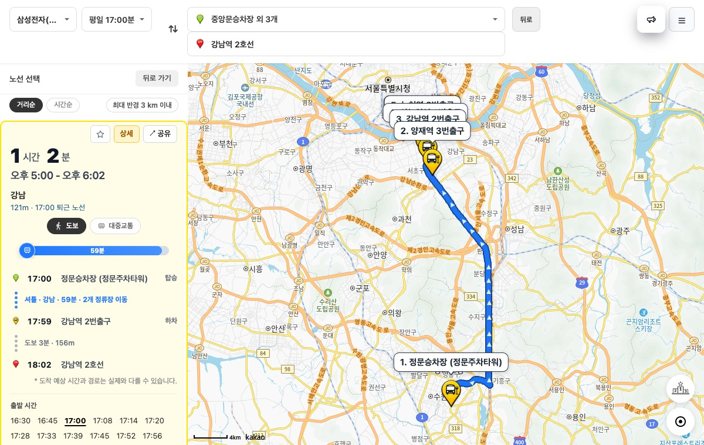
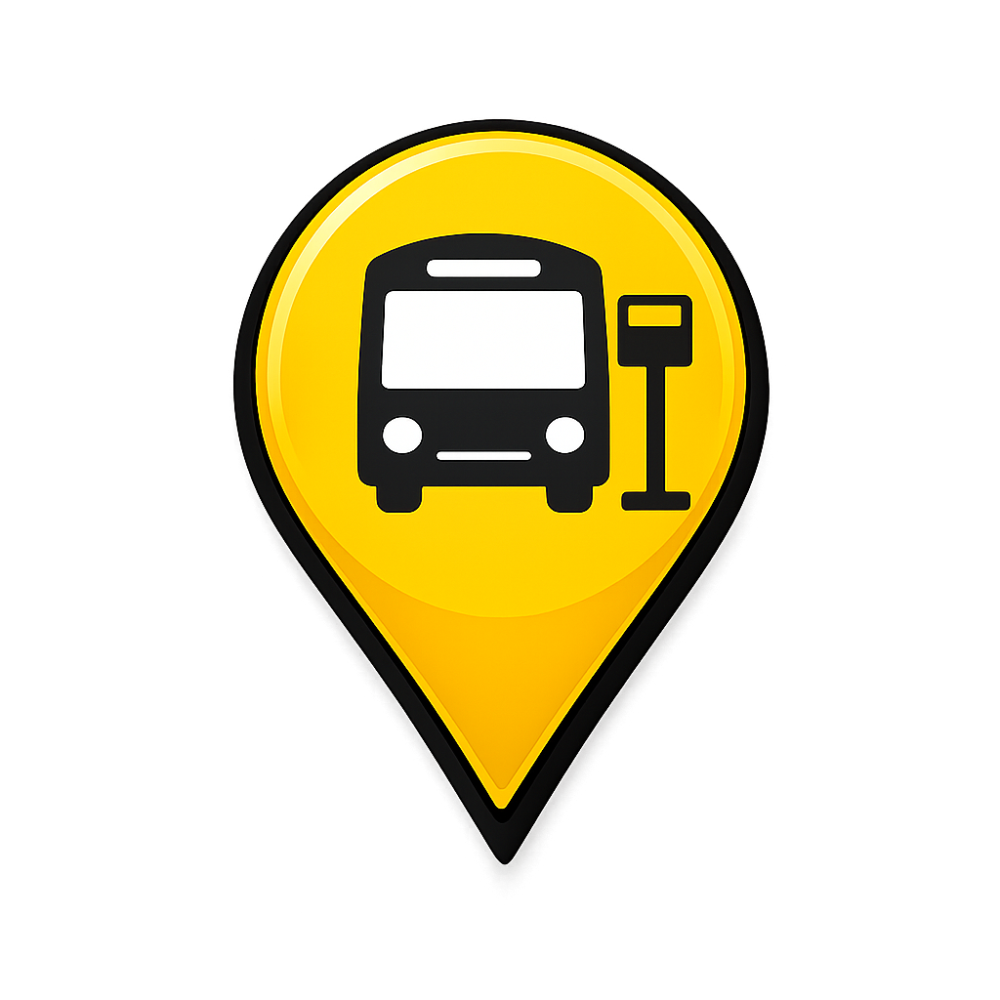
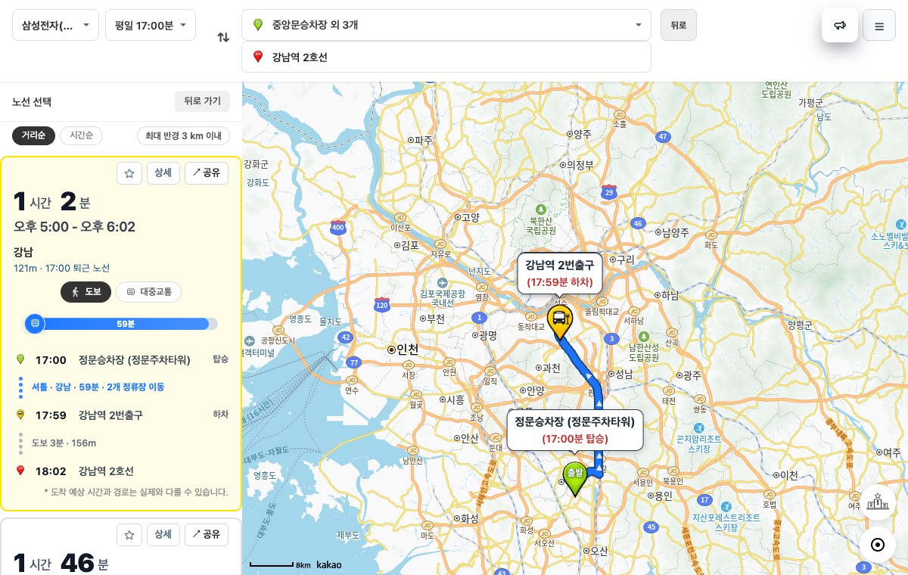
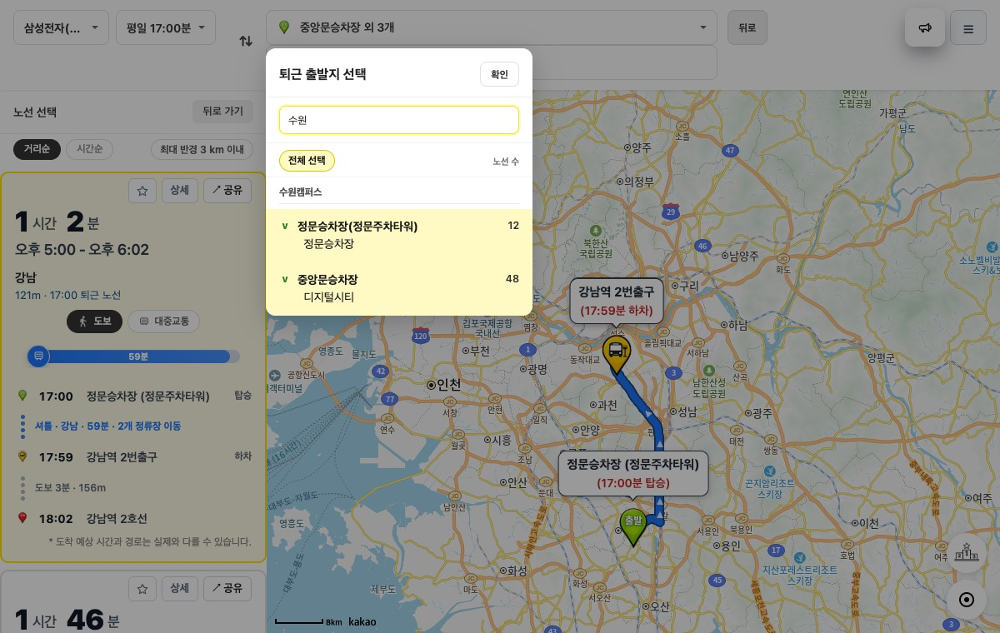
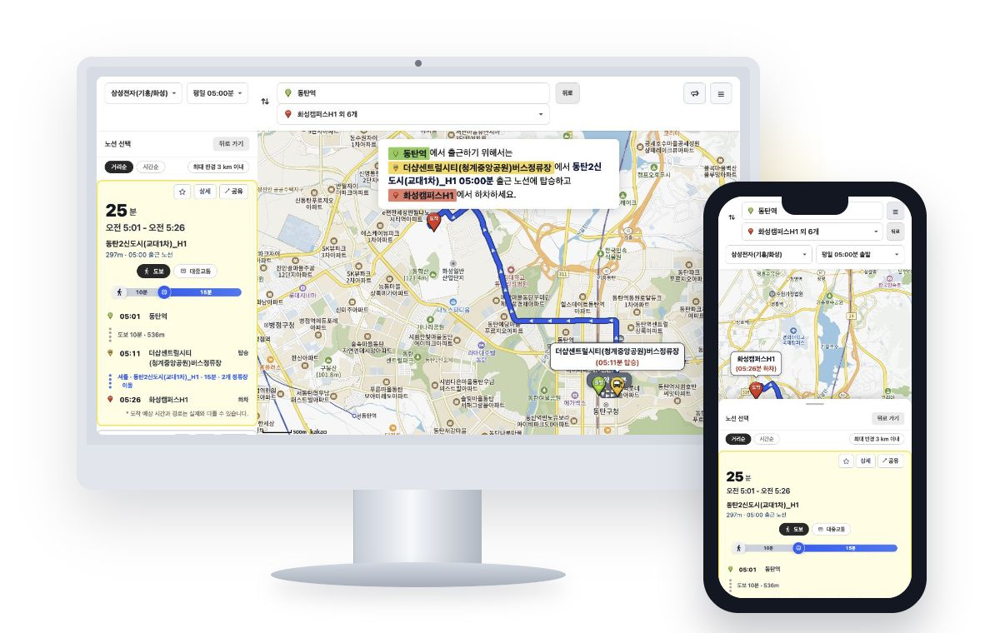

출발시각 및 정류장별 도착 시간
이용 가능한 출발시각을 확인하고, 정류장별 예상 도착 시간을 함께 비교할 수 있습니다.


셔틀Go 셔틀 검색하기삼성전자 수원 사업장에서 강남역 2호선까지 가는 퇴근 버스 노선과 예상 도착 시간을 확인할 수 있습니다.
퇴근 셔틀 검색하기Search result
탑승 정류장부터 하차 정류장, 도보 이동, 강남역 2호선 도착 예상 시간까지 빠르게 확인할 수 있습니다.

Search condition
수원 출발 정류장을 직접 선택해 필요한 퇴근 셔틀만 확인할 수 있습니다.

Route details
상세 버튼을 누르면 같은 노선의 출발시각, 경유 정류장, 정류장별 도착 시간을 확인할 수 있습니다.
이용 가능한 출발시각을 확인하고, 정류장별 예상 도착 시간을 함께 비교할 수 있습니다.

Device support
데스크톱에서는 큰 화면으로 경로를 비교하고, 모바일에서는 이동 중에도 셔틀 노선을 바로 확인할 수 있습니다.

ShuttleGo